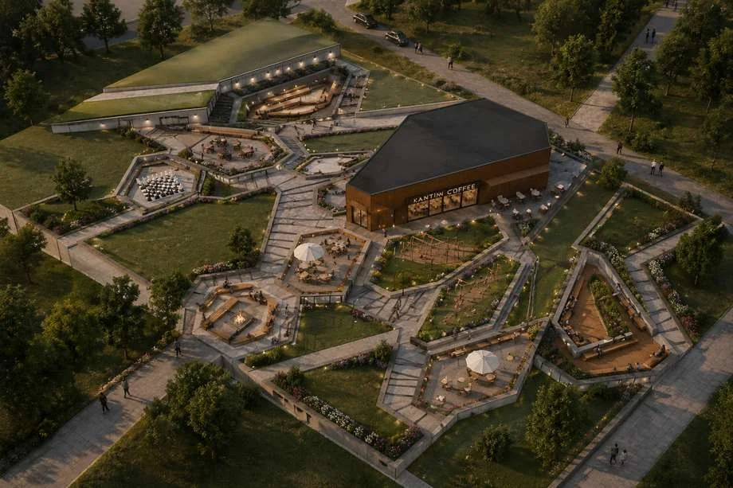
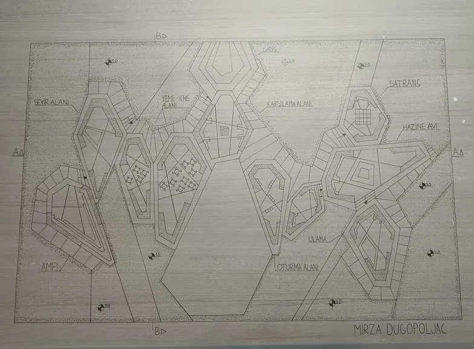
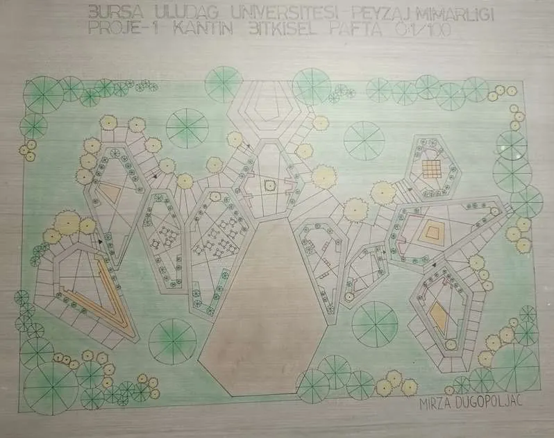
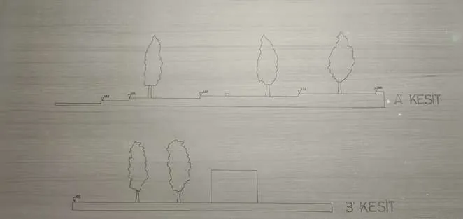
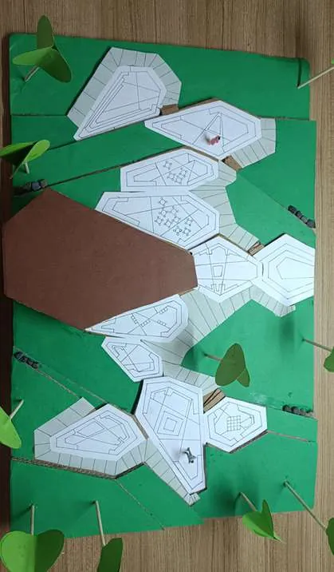
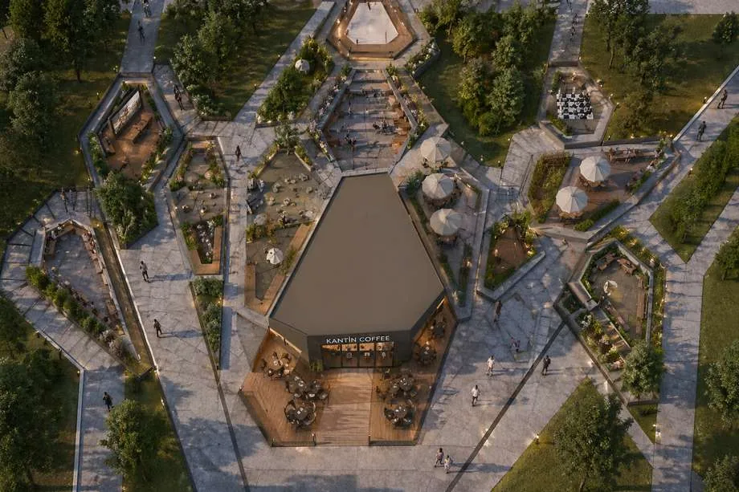
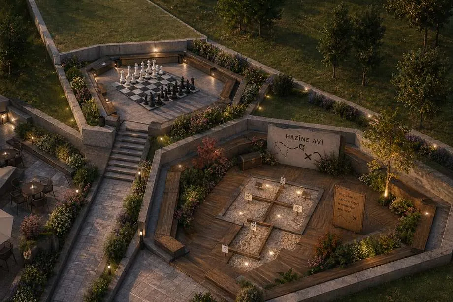
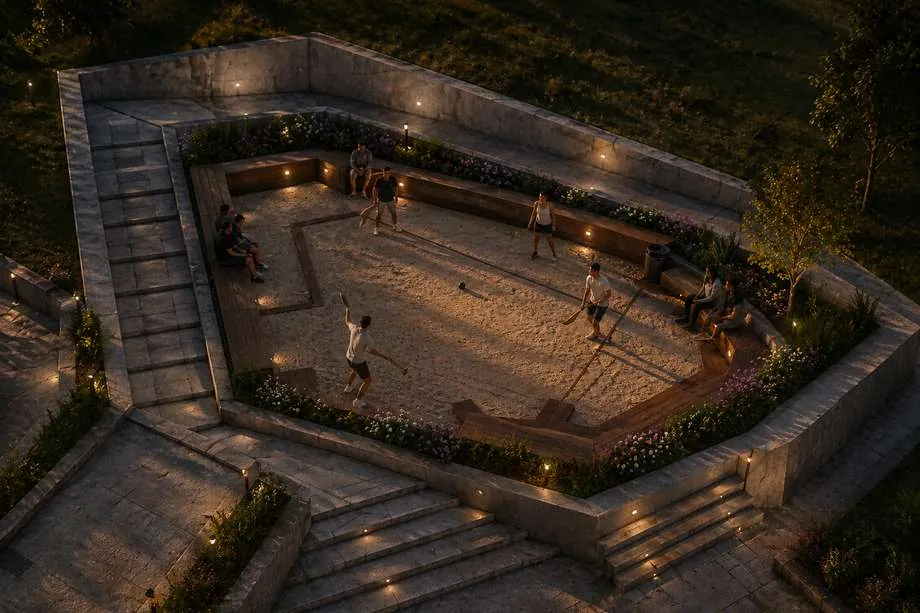

06 / Campus LandscapeKampüs Peyzajı
School Canteen LandscapeKantin Çevresi Peyzajı
A multifunctional student landscape for socializing, play and varied outdoor experiences.Sosyalleşme, oyun ve farklı açık alan deneyimleri için çok işlevli öğrenci peyzajı.

TypeTürCampus LandscapeKampüs Peyzajı
ContextBağlamAcademic landscape designAkademik peyzaj tasarımı
FocusOdakCampus life · play · social interaction · concept developmentKampüs yaşamı · oyun · sosyal etkileşim · konsept geliştirme
Project storyProje hikâyesi
The canteen surroundings are designed as more than a food-and-drink zone. Social, play and experiential spaces are layered together to increase spatial variety and student interaction.Kantin çevresi yalnızca yeme-içme alanı olarak değil; sosyal, oyun ve deneyim alanlarının bir araya geldiği çok işlevli bir açık alan olarak tasarlanmıştır. Mekânsal çeşitliliği ve öğrenci etkileşimini artırmak hedeflenmiştir.
Drawings + visualsÇizimler + görseller
Explore the workÇalışmayı incele
Open any image to inspect the plan, model, render or presentation board at a larger scale.Plan, maket, render veya sunum paftasını daha büyük ölçekte incelemek için herhangi bir görseli aç.







